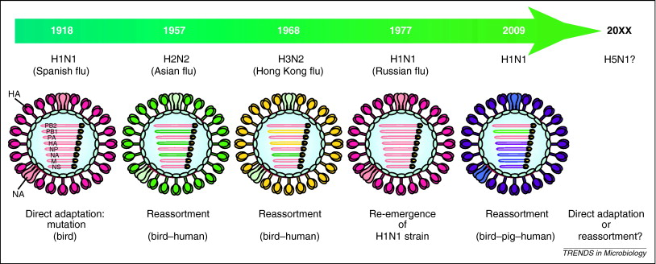

Gripe Espanhola
Influenza A ou Gripe A tem diversos subtipos, sendo 1 deles o H1N1 que ficou conhecido como o vírus da Gripe Espanhola ou Gripe Suína.
O H em H1N1 vem de Hemaglutinina e o N de Neuraminidase, 2 tipos de enzimas. A Hemaglutinina é usada para o vírus se conectar a célula, enquanto a Neuraminidase é usada para se desconectar.
O vírus originalmente apenas infectava aves, algum tempo depois, o vírus passou a infectar outros animais, como os suínos, por exemplo e, de alguma forma passou a contagiar os seres humanos. Afetando o sistema imunológico fazendo com que ele trabalhe em excesso com a proteína cytokines, criando leukocyte nos pulmões, fazendo com que haja secreção sanguínea e muco.
Origem evolutiva do vírus
É de conhecimento geral que os vírus se modificam com o decorrer dos anos, tornando-se mais fortes e mais resistentes às suas respectivas vacinas. O vírus Influenza é um excelente exemplo deste fato, pois ele sofreu uma grande mutação desde a pandemia de gripe espanhola de 1918. No ano deste primeiro surto, a variação responsável foi o H1N1; já em 1957, surgiu o H2N2, que se transformou, em 1968, em H3N2.
As versões antigas do vírus não deixam de existir, mas conforme ele se renova, nós devemos correr para alcançá-lo.
Características
O vírus Influenza é dividido em três categorias: A, B e C. A categoria C causa infecções respiratórias brandas, ou seja, tem baixa taxa de mortalidade e não causa grande impacto na rede de saúde. Por sua vez, as categorias A e B estão relacionadas a epidemias sazonais, causando sintomas e infecções mais severas, podendo levar o paciente a óbito e o sistema de saúde ao limite.
O tipo A geralmente está relacionado a grandes pandemias, como em 1918. A categoria A é classificada em subtipos de acordo com as proteínas de superfície, hemaglutinina (HA ou H) e neuraminidase (NA ou N). Dentre os subtipos de vírus influenza A, os subtipos A(H1N1)pdm09 e A(H3N2) circulam de maneira sazonal e infectam humanos. Alguns vírus influenza A de origem animal também podem infectar humanos causando doença grave, como os vírus A(H5N1), A(H7N9), A(H10N8), A(H3N2v), A(H1N2v), entre outros.
Síntomas dessa gripe
O vírus da Gripe Espanhola (Influenza A) tinha a capacidade de afetar vários sistemas do organismo, podendo causar sintomas graves ao atingir os sistemas respiratório, nervoso, digestivo, renal ou circulatório.
Assim, entre os sintomas de gripe H1N1 causada por esse vírus, podemos destacar:
- Dores musculares e nas articulações;
- Intensa dor de cabeça e mal-estar;
- Insônia e falta de apetite;
- Febre acima de 38°C;
- Cansaço e fadiga excessivos;
- Dificuldade para respirar e pneumonia;
- Dores de garganta devido a Inflamação da laringe, faringe, traqueia e brônquios;
- Dor abdominal e diarreia;
- Aumento ou diminuição dos batimentos cardíacos;
- Proteinúria, que é o aumento da concentração de proteína na urina;
- Nefrite;
- Tosse e coriza;
- Vômitos e náuseas;
- Calafrios;
- Irritação nos olhos.
Após algumas horas do surgimento dos sintomas, os pacientes infectados podiam ou não apresentar diversos sintomas, dentre eles manchas marrons no rosto, pele azulada, tosse com sangue e sangramentos pelo nariz e orelhas.
Os sintomas de H1N1 podem permanecer por mais de 7 dias.
Tratamentos e vacinas desenvolvidas
Não foi descoberto um tratamento 100% eficaz para essa gripe, sendo apenas aconselhado repousar e manter uma alimentação e hidratação adequadas. Assim, poucos eram os pacientes que ficavam curados, dependendo do seu sistema imune.
Como não havia vacina na época contra o vírus, o tratamento era feito para combater os sintomas e normalmente era receitado pelo médico aspirina, que é um anti-inflamatório usado para aliviar a dor e baixar a febre.
A mutação do vírus da gripe comum de 1918 é semelhante à que surgiu nos casos da gripe das aves (H5N1) ou gripe suína (H1N1). Nestes casos, como não era fácil identificar o organismo que estava causando a doença, não era possível encontrar um tratamento eficaz, tornando a doença fatal na maior parte dos casos.
Conteúdo cultural: Contágio
2011 | 1h 46min | Drama, Ficção Científica, Suspense | Dirigido por: Steven Soderbergh.
Sinopse
O filme Contágio mostra o rápido progresso de um vírus letal, transmissível pelo ar, que mata em poucos dias. Como a epidemia se espalha rapidamente, a comunidade médica mundial inicia uma corrida para encontrar a cura e controlar o pânico que se espalha mais rápido do que o próprio vírus. Ao mesmo tempo, pessoas comuns lutam para sobreviver em uma sociedade que está desmoronando.
Esta obra se relaciona com o tema do grupo, pois além de apresentar a forma de agir do vírus, ele também relata a reação das pessoas. Pode não se passar na mesma época em que a Gripe Espanhola estava assustando o mundo, mas nos mostra o desespero de sentir a morte tão próxima.

Referências bibliográficas
BEZERRA, Dr.ª Clarisse. O que foi a Gripe Espanhola e quais eram os sintomas; Tua Saúde. Disponível em: https://www.tuasaude.com/gripe-espanhola/. Acesso em junho de 2020.
Ministério da Saúde. Influenza. Disponível em: https://www.saude.gov.br/saude-de-a-z/gripe/746-saude-de-a-a-z/40118-influenza. Acesso em agosto de 2020.
Rede D'Or São Luiz. H1N1. Disponível em: https://www.rededorsaoluiz.com.br/doencas/h1n1. Acesso em junho de 2020.
SILVA, Daniel Neves. Gripe Espanhola; Brasil Escola. Disponível em: https://brasilescola.uol.com.br/historiag/i-guerra-mundial-gripe-espanhola-inimigos-visiveis-invisiveis.htm. Acesso em junho de 2020.
SILVA, Daniel Neves. Gripe espanhola; Mundo Educação. Disponível em: https://mundoeducacao.uol.com.br/historiageral/gripe-espanhola.htm. Acesso em junho de 2020.
UIP, David. A Evolução da Nova Gripe. Disponível em: https://www.crmpr.org.br/A-evolucao-da-nova-gripe-13-722.shtml#:~:text=Este%20novo%20v%C3%ADrus%20est%C3%A1%20 associado,imune%20herdada%20em%20determinadas%20popula%C3%A7%C3%B5es. Acesso em agosto de 2020.